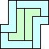
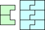
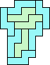
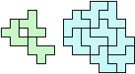
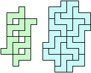

| 5 |  |  | (GS) |  (GS) |  (GS) | 
|  (GS) |
1.
We define the enlargement of a polyomino P to be the polyomino whose unit squares touch (even at one point) the squares of P. Given a polyomino P, what is the smallest number of copies of P that tile a shape S and also tile the enlargement of S? What if we also want the enlargement of the enlargement of S, or the whole infinite series of enlargements to have tilings?
2.
Given an n-omino P, we define its children to be the (n+1)-ominoes that can be formed by adding 1 more square to P. Now start with a polyomino P, and try to completely surround it with all of its children. Each child must touch P at more than one point. We call this the 1-ring around P. Which polyominoes have a 1-ring? For those that do, try to completely surround the 1-ring of P with all the grandchildren of P. This is called a 2-ring of P. Which polyominoes have a 2-ring? In general, how many rings does a polyomino have?
3.
For fixed positive integers n and k, what is the largest area A(n,k) that can be completely surrounded by k copies of the same n-omino?
Why is this problem easy for n = 1 or 2, or for k = 1, 2, or a multiple of 4? What are the values of A(n,k) for other values of n and k? What polyominoes give the largest areas? Are they always I-shaped or L-shaped?
1.
Here are the smallest-known solutions:
|
|
| |||||||||
|
| |||||||
| |||||||
|
Joe DeVincentis considered the question of how many successive enlargements could be tiled. He noted that the monomino and domino can tile ever-larger enlargements. George Sicherman noticed the same thing for the I, L, and O tetrominoes. Joe DeVincentis noticed that the 2×4 rectangle also has this property. Then Joe DeVincentis showed that only polyominoes of area 1, 2, 4, and 8 can possibly tile infinitely many enlargements. In general, how many enlargements can be tiled?
Here are the best known results:
|
|
| ||||
|
| ||||
|
George Sicherman thought polyhexes, polyiamonds, and polyaboloes should be examined as well.
|
|
| ||||||
| ||||||
|
|
|
| |||||
|
| ||||
|
|
|
|
George Sicherman also examined the weaker form of enlargement:
|
|
The best known solutions are shown below:
|
|
| |||||||
|
| ||||||||
| ||||||||
|
If we reverse things, some polyominoes can be surrounded by their parents, the polyominoes that are missing one square from the original. What polyominoes have reverse 1-rings and 2-rings?
|
| |||||||||
| |||||||||
|
|
George Sicherman thought polyhexes and polyiamonds should be considered as well:
|
|
|
| ||||||
|
| ||||
|
|
|
|
|
When n=1 or n=2, the polyominoes are so small we can make the region as square as possible. When k=1 or k=2, the optimal polyominoes will also allow for a hole that is as square as possible. When k is a multiple of 4, an I polyomino can be used to make a square region. Thus we have:
Joe DeVincentis conjectures that for k=10, an I polyomino is always best, and A(n,10)=2n(3n–2).
Here are the largest-known areas for some other small cases:
| n \ k | 3 | 5 | 6 | 7 | 9 | 11 | 13 |
|---|---|---|---|---|---|---|---|
| 3 | A(3,3)=0 | A(3,5)=6 | A(3,6)=12 | A(3,7)=15 | A(3,9)=30 (JD) | A(3,11)=48 (JD) | A(3,13)=72 (JD) |
| 4 | A(4,3)=3 | A(4,5)=13 | A(4,6)=24 | A(4,7)=30 (JD) | A(4,9)=58 (JD) | A(4,11)=94 (JD) | A(4,13)=138 (JD) |
| 5 | A(5,3)=6 | A(5,5)=24 | A(5,6)=40 | A(5,7)=50 (JD) | A(5,9)=93 (JD) | A(5,11)=148 (JD) | A(5,13)=218 (JD) |
| 6 | A(6,3)=8 | A(6,5)=36 | A(6,6)=60 (JD) | A(6,7)=76 (JD) | A(6,9)=136 (JD) | A(6,11)=218 (JD) | A(6,13)=320 (JD) |
| 7 | A(7,3)=14 (JD) | A(7,5)=50 (JD) | A(7,6)=84 (JD) | A(7,7)=108 (JD) | A(7,9)=190 (MM) | A(7,11)=297 (JD) | A(7,13)=437 (JD) |
| 8 | A(8,3)=20 (JD) | A(8,5)=70 (JD) | A(8,6)=113 (JD) | A(8,7)=145 (JD) | A(8,9)=255 (MM) | A(8,11)=391 (JD) | A(8,13)=572 (JD) |
| 9 | A(9,3)=24 (JD) | A(9,5)=89 (JD) | A(9,6)=146 (JD) | A(9,7)=182 (JD) | A(9,9)=324 (MM) | A(9,11)=498 (JD) | A(9,13)=725 (JD) |
| 10 | A(10,3)=33 (JD) | A(10,5)=111 (JD) | A(10,6)=183 (JD) | A(10,7)=226 (JD) | A(10,9)=404 (JD) | A(10,11)=622 (JD) |  A(10,13)=896 (JD) |
| 11 | A(11,3)=42 (JD) | A(11,5)=140 (JD) | A(11,6)=224 (JD) | A(11,7)=279 (JD) | A(11,9)=489 (JD) | A(11,11)=756 (JD) | A(11,13)=1085 (JD) |
| 12 | A(12,3)=48 (JD) | A(12,5)=166 (JD) | A(12,6)=269 (JD) | A(12,7)=338 (JD) | A(12,9)=584 (JD) | A(12,11)=907 (JD) | A(12,13)=1301 (JD) |
| 13 | A(13,3)=60 (JD) | A(13,5)=196 (JD) | A(13,6)=318 (JD) |  A(13,7)=401 (JD) | A(13,9)=694 (JD) | ||
| 14 | A(14,3)=72 (JD) | A(14,5)=234 (JD) | A(14,6)=372 (JD) | A(14,7)=466 (JD) | |||
| 15 | A(15,3)=81 (JD) | A(15,5)=267 (JD) | A(15,6)=430 (JD) | A(15,7)=530 (JD) | |||
| 16 | A(16,3)=95 (GS) | A(16,5)=305 (JD) | A(16,6)=492 (JD) | A(16,7)=610 (JD) | |||
| 17 | A(17,3)=110 (GS) | A(17,5)=352 (JD) | |||||
| 18 | A(18,3)=122 (JD) | A(18,5)=392 (JD) | |||||
| 19 | A(19,3)=138 (JD) | ||||||
| 20 | A(20,3)=156 (JD) |
George Sicherman suspects that for fixed n and large k, the solution always involves I polyominoes.
Because of the A(15,3)=81 solution found by Joe DeVincentis, it appears the optimal solutions do not always use an L or I polyomino.
What if we want to fence off m different regions, all with the same area, using k copies of the same n-omino? What is the largest A(n,k,m) those areas could be? Here are the best known solutions:
| n \ k | 2 | 3 | 4 | 5 | 6 | 7 | 8 | 9 |
|---|---|---|---|---|---|---|---|---|
| 3 | A(3,6,2)=2 (GS) | A(3,7,2)=4 (JD) |  A(3,8,2)=6 (JD) | A(3,9,2)=9 (JD) | ||||
| 4 |  A(4,4,2)=2 (GS) | A(4,5,2)=3 (JD) | A(4,6,2)=6 (GS) | A(4,7,2)=9 (JD) | A(4,8,2)=12 (JD) | A(4,9,2)=16 (JD) | ||
| 5 | A(5,3,2)=1 (GS) |  A(5,4,2)=2 (GS) | A(5,5,2)=6 (GS) | A(5,6,2)=8 (GS) | A(5,7,2)=16 (JD) | A(5,8,2)=20 (JD) | A(5,9,2)=30 (JD) | |
| 6 | A(6,3,2)=2 (JD) | A(6,4,2)=5 (GS) | A(6,5,2)=8 (JD) | A(6,6,2)=17 (JD) | A(6,7,2)=25 (JD) | A(6,8,2)=30 (JD) | A(6,9,2)=42 (JD) | |
| 7 | A(7,2,2)=1 (GS) | A(7,3,2)=3 (GS) | A(7,4,2)=8 (JD) | A(7,5,2)=14 (JD) | A(7,6,2)=24 (JD) | A(7,7,2)=36 (JD) | ||
| 8 | A(8,2,2)=2 (JD) | A(8,3,2)=4 (GS) | A(8,4,2)=12 (JD) |  A(8,5,2)=20 (JD) | A(8,6,2)=30 (JD) | A(8,7,2)=49 (JD) | ||
| 9 | A(9,3,2)=6 (JD) | A(9,4,2)=17 (JD) | A(9,5,2)=27 (JD) | A(9,6,2)=44 (JD) |
| n \ k | 3 | 4 | 5 | 6 | 7 | 8 | 9 | 10 |
|---|---|---|---|---|---|---|---|---|
| 3 | A(3,8,3)=2 (JD) | A(3,9,3)=3 (JD) | A(3,10,3)=4 (JD) | |||||
| 4 | A(4,5,3)=1 (GS) | A(4,6,3)=2 (GS) | A(4,7,3)=3 (JD) | A(4,8,3)=6 (JD) | A(4,9,3)=7 (JD) | A(4,10,3)=9 (JD) | ||
| 5 |  A(5,4,3)=1 (GS) | A(5,5,3)=2 (JD) | A(5,6,3)=4 (JD) | A(5,7,3)=6 (JD) | A(5,8,3)=10 (JD) | A(5,9,3)=12 (JD) | A(5,10,3)=16 (JD) | |
| 6 | A(6,3,3)=1 (GS) | A(6,4,3)=2 (GS) |  A(6,5,3)=4 (JD) | A(6,6,3)=6 (JD) | A(6,7,3)=8 (JD) |  A(6,8,3)=12 (JD) | A(6,9,3)=18 (JD) | A(6,10,3)=25 (JD) |
| 7 | A(7,4,3)=4 (JD) | A(7,5,3)=6 (JD) | A(7,6,3)=8 (JD) | A(7,7,3)=12 (JD) | A(7,8,3)=21 (JD) |
| n \ k | 4 | 5 | 6 | 7 | 8 | 9 | 10 | 11 |
|---|---|---|---|---|---|---|---|---|
| 3 | A(3,9,4)=1 (JD) | A(3,10,4)=2 (JD) | A(3,11,4)=3 (JD) | |||||
| 4 | A(4,6,4)=1 (GS) | A(4,7,4)=2 |  A(4,9,4)=4 (JD) | A(4,10,4)=5 (JD) | A(4,11,4)=6 (JD) | |||
| 5 | A(5,5,4)=1 (GS) | A(5,6,4)=2 (JD) | A(5,8,4)=6 (JD) | A(5,10,4)=8 (JD) | A(5,11,4)=10 (JD) | |||
| 6 | A(6,4,4)=1 (JD) | A(6,5,4)=2 (JD) | A(6,6,4)=4 (JD) | A(6,7,4)=6 (JD) | A(6,8,4)=8 (JD) | A(6,10,4)=12 (JD) | A(6,11,4)=18 (JD) | |
| 6 | A(7,4,4)=2 (JD) | A(7,5,4)=3 (JD) | A(7,6,4)=6 (JD) | A(7,7,4)=8 (JD) | A(7,8,4)=10 (JD) |  A(7,9,4)=14 (JD) |
If you can extend any of these results, please e-mail me. Click here to go back to Math Magic. Last updated 10/2/13.